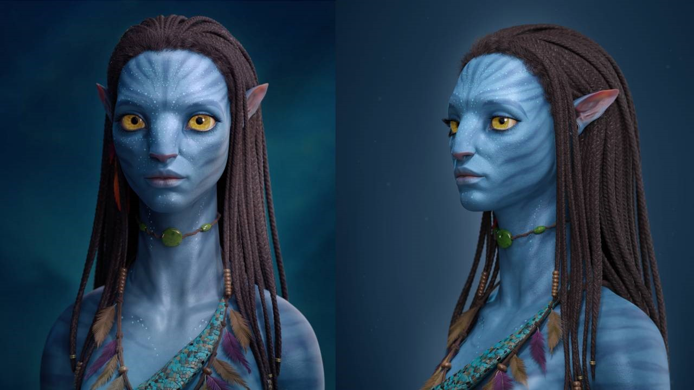
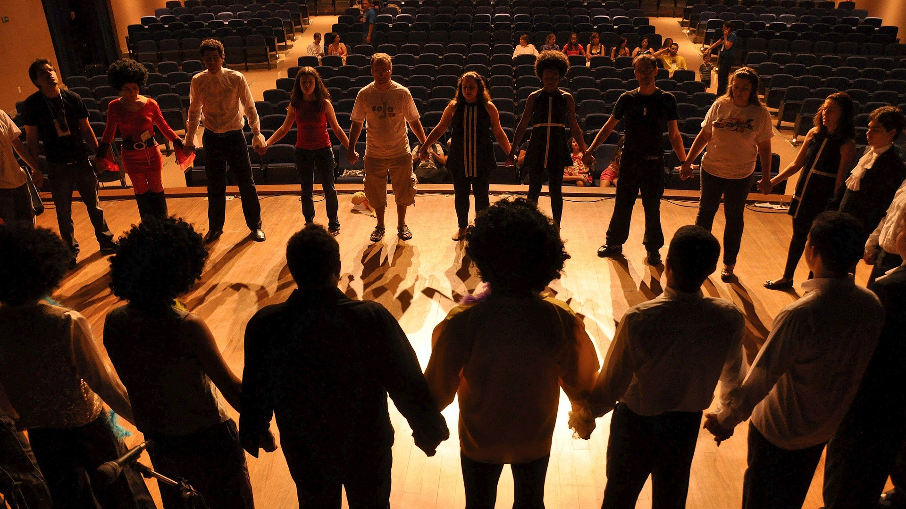

Készen állsz arra, hogy kibontakoztasd kreativitásodat és fejleszd képességeidet? Csatlakozz a Gardner-féle tehetségterületekre épülő Tehetséggondozó Programunkhoz, ahol szakértői támogatással fedezheted fel és fejlesztheted a benned rejlő tehetséget! Programunk átfogóan támogatja a kreatív írás és forgatókönyvírás, dráma és színjátszás, önismeret, mozgás és sport, tánc, beszédkészség és szinkronizálás, valamint az ének és zene területeit.
Engedd szárnyalni a fantáziádat a kreatív írás és forgatókönyvírás műhelyek során, ahol történeteket alkothatsz, amelyek megragadják az olvasók és a nézők figyelmét. Lépj a színpadra a dráma és színjátszás foglalkozásokon, kipróbálva magad különböző szerepekben, és fejleszd színészi képességeidet és önbizalmadat. Ismerd meg mélyebben önmagadat az önismereti gyakorlatok és tesztek segítségével, amelyek révén magabiztosabbá válhatsz és hatékonyabban tudsz kommunikálni.
Legyél aktív és sportos a mozgás és sport foglalkozásokon, ahol különböző sportágakkal ismerkedhetsz meg, és fejlesztheted fizikai erőnlétedet és állóképességedet. Mozogj a ritmusra a táncórákon, ahol különböző táncstílusokat tanulhatsz meg, és engedd szabadjára kreativitásodat. Fejleszd kommunikációs képességeidet a beszédkészség és szinkronizálás foglalkozásokon, ahol megtanulhatod, hogyan fejezd ki magad hatékonyan és magabiztosan különböző helyzetekben. Végül hagyd, hogy a zene és az ének szárnyakat adjon az ének- és zenei foglalkozásokon, ahol különböző zenei stílusokat és technikákat sajátíthatsz el.
Csatlakozz hozzánk, és válj a legjobb verzióddá! Fejleszd tehetségedet, ismerd meg önmagad, és légy része egy támogató közösségnek, amely segít elérni a céljaidat. Ne habozz, jelentkezz most, és kezdd el az utadat a siker felé!
A filmírás lenyűgöző világában rengeteg lehetőség nyílik az alkotók számára, hogy történeteiket a vászonra varázsolják. Ez a kreatív folyamat magában foglalja a történetmesélés, a karakterfejlesztés, és a párbeszédírás művészetét, amelyeken keresztül az írók képesek életre kelteni vízióikat. Az írók különféle műfajokban és stílusokban próbálhatják ki magukat, legyen szó drámáról, vígjátékról, akcióról vagy sci-fi-ről, és lehetőségük van arra is, hogy együttműködjenek rendezőkkel, producerekkel és más filmes szakemberekkel.
A filmes illusztrátorok kulcsszerepet játszanak a filmkészítés folyamatában, mivel ők hozzák létre a film látványvilágának elsődleges koncepcióit és vizuális terveit. Ezek a művészek részletes storyboardokat, koncepciórajzokat és látványterveket készítenek, amelyek segítenek a rendezőknek, producereknek és más kreatív szakembereknek elképzelni a jelenetek végső kinézetét.
A filmes illusztrátorok együttműködnek a díszlettervezőkkel, jelmeztervezőkkel és a vizuális effektusok csapataival is, hogy biztosítsák a film vizuális konzisztenciáját és esztétikai minőségét. Munkájuk alapvető fontosságú a film előkészítési szakaszában, ahol minden részletet alaposan kidolgoznak, így megkönnyítve a forgatást és a produkció egyéb szakaszait. Az illusztrátorok kreativitása és művészi tehetsége jelentősen hozzájárul a filmek világának megteremtéséhez és a történetek vizuális életre keltéséhez.


Fedezd fel a 3D modellezés, animáció és motion capture izgalmas világát, és válj a digitális művészetek mestereivé! Ezek a készségek nemcsak a játékfejlesztés és filmgyártás területén nyitnak meg számtalan lehetőséget, hanem az építészet, a virtuális valóság és a reklámipar számára is nélkülözhetetlenek. A 3D modellezés során virtuális tárgyakat és karaktereket alkothatsz meg, míg az animációval életre keltheted őket, a motion capture technológia pedig lehetővé teszi, hogy valós mozgásokat rögzíts és alkalmazz digitális szereplőidre.
Fedezd fel a színjátszás, önismeret, beszéd, testmozgás és tánc világát! Ezek a foglalkozások nemcsak a művészi készségeidet fejlesztik, hanem mélyebb önismeretre is szert tehetsz. A színjátszás segítségével különböző karakterek bőrébe bújhatsz, miközben a beszédtechnika révén tökéletesíted az artikulációdat és hangképzésedet. A testmozgás oktatásokkal finomítod a mozdulataidat, hogy hitelesen jeleníts meg minden szerepet, a tánc pedig dinamikus és látványos elemekkel gazdagítja az előadásaidat. Csatlakozz hozzánk, és lépj színpadra magabiztosan, önazonosan és professzionálisan!

A filmkészítés foglalkozásai izgalmas lehetőséget kínálnak mindazoknak, akik szeretnék megismerni a filmes világ varázslatos kulisszatitkait és saját alkotásaikat létrehozni. A résztvevők megtanulhatják a filmkészítés alapvető lépéseit, a forgatókönyvírástól kezdve a rendezésen át a vágásig. Ezek a foglalkozások gyakorlati és elméleti tudást egyaránt nyújtanak, miközben a tanulók saját rövidfilmjeiket készíthetik el. Fedezd fel, hogyan válhatnak ötleteid látványos filmes történetekké, és csatlakozz hozzánk, hogy megtapasztald a filmkészítés művészetét!
Az ének és zene foglalkozások kiváló lehetőséget kínálnak mindenkinek, aki szeretné felfedezni a zene varázslatos világát és kibontakoztatni kreativitását. Ezek a foglalkozások nemcsak a zenei tehetség fejlesztésére szolgálnak, hanem arra is, hogy a résztvevők jobban megismerjék önmagukat és másokat, valamint magabiztosabban lépjenek fel különböző élethelyzetekben. A közös munka során a résztvevők megtanulják, hogyan dolgozzanak csapatban, és hogyan hozzanak létre egy teljes zenei produkciót az ötlettől a megvalósításig.